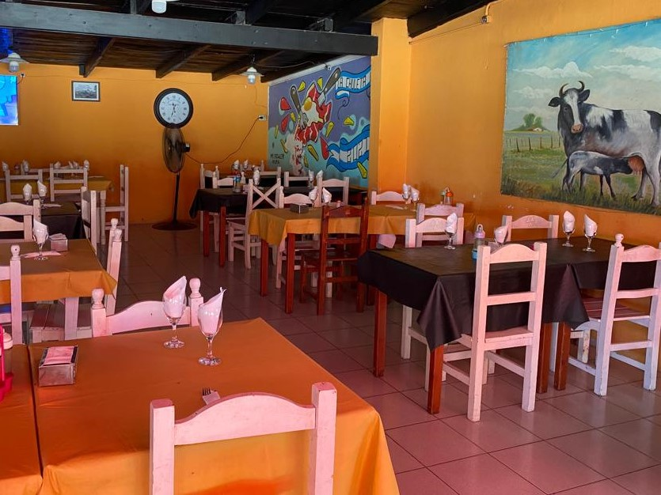

¡Bienvenidos y bienvenidas a la página oficial de La Chuleta Loca, el restaurante situado en la ciudad de Las Flores, a lo largo de la colectora de la Ruta 3! Aquí, te invitamos a deleitarte con exquisitos platillos y a vivir momentos sumamente agradables. Este establecimiento es más que un simple negocio, es un proyecto familiar en el que nos esforzamos para que te sientas parte de nuestra propia familia. Aunque ya somos conocidos entre los habitantes de nuestra localidad, si te encuentras de paso por la entrada de la ciudad de Las Flores, no dudes en acercarte y disfrutar de una chuleta realmente espectacular, o mejor dicho, de La Chuleta Loca. ¡Te esperamos con los brazos abiertos para brindarte una experiencia culinaria única!
